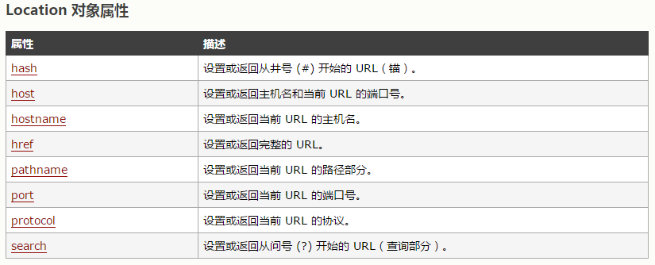

分享人：高雪峰
目录
1.背景介绍
2.知识剖析
3.常见问题
4.解决方案
5.编码实战
6.扩展思考
7.参考文献
8.更多讨论
Browser Object Model，浏览器对象模型，简称BOM，是JavaScript在使用过程中极其重要的组成部分，也是在浏览器实现JavaScript的核心。多年来，BOM缺少一个比较统一的标准，基本上都是各大浏览器提供商各自为政，对其进行扩展补充。W3C为了把浏览器中的JavaScript最基本部分标准化，已经将BOM的主要方面纳入到了HTML5标准中。接下啦，我们接着上一次多的内容，来认识一下它。
Javascript是单线程语言，但允许通过设置超时值和间歇时间值调度代码在特定的时刻执行。
超时调用，在指定时间过后执行代码。需要通过window对象的setTimeout()方法，它接受两个参数：要执行的代码，和以毫秒表示的时间。第一个参数可以是一个包含js代码的字符串，也可以是一个函数。第二个参数是等待多长时间的毫秒数。这里需要注意的是，由于js是单线程语言，因此，当时间到了之后，代码也许并不会如想象的一般，立即执行，它只是表示时间到了以后将要执行的代码放到了js的处理任务的队列中，还要老老实实地排队等候进一步的处理。
//不建议传递字符串！
setTimeout("alert('Hello Da Wa!')", 1000);
//推荐以下写法
setTimeout(function(){
alert('Hello World!')
}, 2000);
//使用清除方法在代码未调用前清除该项
clearTimeout();
间隔调用，在每隔指定时间就执行执行代码，直到间歇调用被取消或者页面被卸载。它需要通过window对象的setInterval()方法，它接受两个参数：要执行的代码，和以毫秒表示的时间。第一个参数可以是一个包含js代码的字符串，也可以是一个函数。第二个参数是间隔多长时间的毫秒数。取消间歇调用的重要性远远大于取消超时调用，防止间歇调用的循环执行。在项目开发中，最好不要使用间歇调用。
//不建议传递字符串！
setInterval("alert('Hello Da Wa!')", 1000);
//推荐以下写法
setInterval(function(){
alert('Hello World!')
}, 2000);
//使用清除方法在代码未调用前清除该项
clearInterval();
location对象是BOM对象中有一个极为重要的对象，它也是一个特别的对象。它既是window对象的属性，又是document对象的属性，也就是说，window.location和document.location引用的是同一个对象。w3school
location对象可以通过多种方式改变浏览器的位置。最常用的方式是assign()，（assign翻译为分配，选派，归属）。它可以打开一个新的url并在浏览器的历史记录中生成一条记录。使用window.location或者location.href设置一个url值，也会以该值调用assign()方法。
location.assign('http://www.baidu.com');
//以下方法等价于上边的写法
window.location = 'http://www.baidu.com';
location.href = 'http://www.baidu.com';
location对象的其他属性也可以修改url地址，同样会在浏览器的历史记录中生成一条新的记录。用户通过单击“后退”就可以返回前一个页面的地址。如果我们不希望用户再返回去，我们就使用到了replace()这个方法，它接受一个参数——要跳转的url，浏览器位置发生变化，同时，不会和刚刚提到的那几个方法一样，会在历史记录中生成新纪录，因此也就不会返回原有的位置了。
于位置有关的，还有一个方法——reload()，作用是重新加载当前的页面。如果不加任何参数，它就会以最有效的方式进行重新加载，也就是用浏览器缓存进行加载。我们如果想强制网页从服务器端重新加载数据过来，可以提供一个true值。例如：location.reload(true)。
navigator对象，用于识别客户端浏览器信息，最早由Netscape Navigation 2.0引入。浏览器各自可能也有自有的识别客户端信息的对象或者方法，但是navigator对象是所有支持js的浏览器所共有的。
除了识别显示客户端的信息之外，navigator对象也提供了一个检测插件的方法，使用plugins数组。该数组包括以下内容：name（插件的名字）、description（插件的描述）、filename（插件的文件名）、length（插件所处理的MIME类型数量）。
screen对象，在编程过程中使用的频次并不高，是一个比较低调的存在。它用来表述客户端的能力，包括浏览器窗口外部的显示器信息，像素高度和宽度，DPI值，颜色的位数（多为32位）、屏幕的位深等信息。
history对象，用于保存用户自打开浏览器时以后的历史记录，是window对象的属性。可以使用go()的方法在历史记录中任意跳转，可以向后也可以向前。这个方法可以接受一个向后或者向前的页面数（整数值）。负值表示向后跳转，正值表示向前跳转。也可以传递一个字符串参数，该字符串必须是浏览器历史记录中存在的，否则无效。
history.go(-1);
history.go(1);
history.go(2);
问题: 如何使用超时调用的方法，避免间隔调用的问题？
这里引入《JavaScript高级程序设计》中的一段代码进行解决方案的介绍。
var num = 0;
var max = 10;
var a = null;
function old(){
num++;
//如果执行次数达到了max设定的值，则取消后续尚未执行的调用
if(num == max){
clearInterval(a);
alert("Done");
}
}
a = setInterval(old, 1000);
//使用超时调用规避间隔调用的循环执行问题
function b(){
num++;
//如果执行次数未达到max设定的值，则设置另一次超时调用
if(num < max){
setTimeout(b, 1000);
} else {
alert("Done");
}
}
setTimeout(b, 1000);
参看上边各知识点简单的demo演示，暂无更多demo！
问题: 如何在列表网页，点击页码等条件重新加载数据后，从顶部显示？
这里使用到了location.hash的方法进行处理。
//页面跳转置顶显示，使用以下两行代码
$location.hash('');
$anchorScroll();
参考一：《JavaScript高级程序设计》
参考二: w3school
讨论点：大家对于window对象还有哪些认识，分享一下？
感谢大家观看
BY : 高雪峰